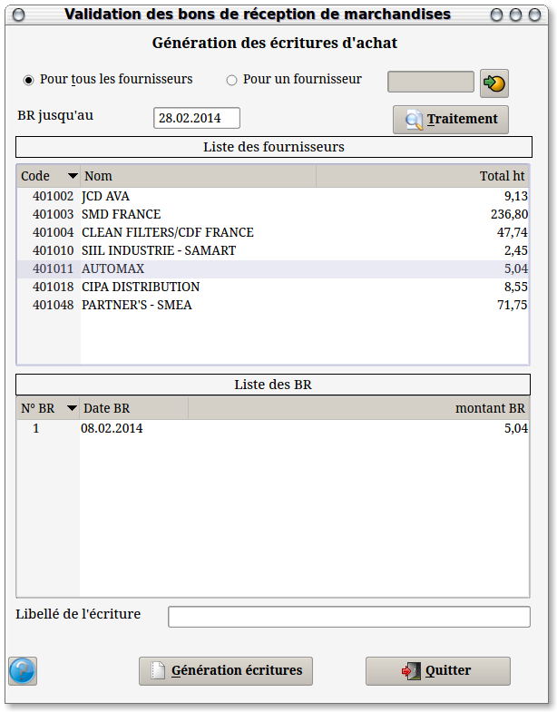
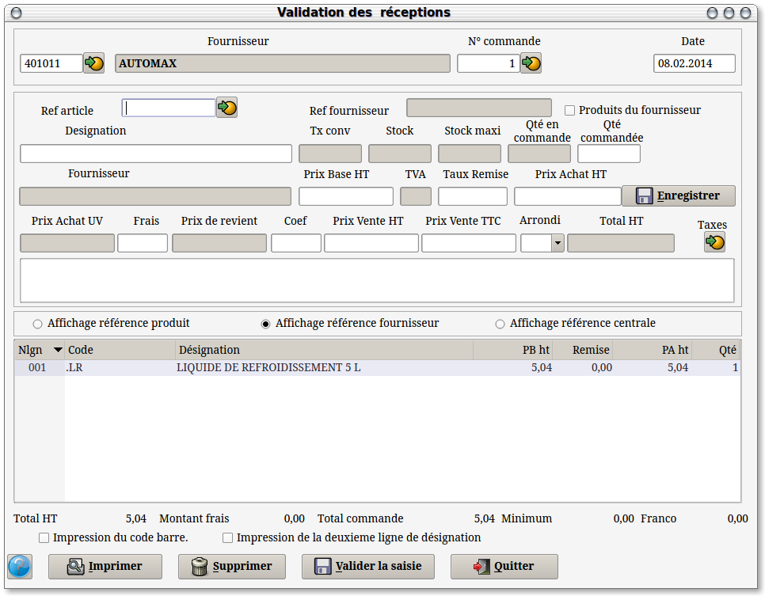
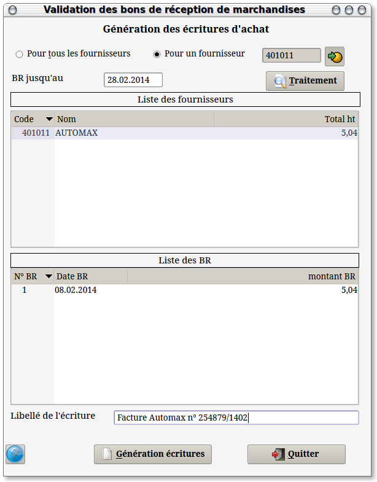

~ Comptabilité et Facturation Laurux ~

~ Comptabilité et Facturation Laurux ~ |
|
|
|
Pour fonctionner correctement ce programme exige
que le journal des achats soit déclaré dans les paramètres
et que les comptes d'achat soient renseignés dans les familles.
Ce programme fonctionne dans le même principe que
la facturation fin de mois et vous permet de travailler avec l'ensemble
des fournisseurs ou avec un seul compte.

Dans la partie haute de l'écran on aura la liste des
fournisseurs qui ont des bons de réceptions a valider et si on
sélectionne un fournisseur, dans la partie basse on aura l'ensemble des
bons de réceptions a valider.
On peut dès lors effectuer plusieurs opérations.
1- On peut supprimer un fournisseur en sélectionnant
la ligne du fournisseur et en faisant "Suppr".
2- On peut supprimer un BR en sélectionnant la ligne
du BR et en faisant "Suppr".
3- On peut modifier un BR en double cliquant sur la
ligne du BR.

Cette possibilité de
modifier le BR va permettre d'ajuster le BR à la facture du
fournisseur, dans le cas ou par exemple le prix facturé soit différent
de celui en vigueur à la date de réception, ou encore d'une quantité
facturée différente.
Il faudra donc que le montant du BR ou que montant
de la totalité des BR soit égal à celui de la facture fournisseur afin
que l'écriture d'achat qui va être générée soit le reflet de la facture
du fournisseur.
On peut saisir un libellé avant de générer
l'écriture. C'est ce libellé qui apparaitra en comptabilité.

Lorsque tout sera correct on pourra cliquer sur le bouton "Génération des écritures". La ou les écritures seront générées en comptabilité dans le journal des achats saisit dans les paramètres et les BR seront validés. Ces BR ne pourront plus être modifiés.
NB: Les écritures de comptabilité générées par le programme sont des écritures closes, c'est à dire qu'elles ne pourront pas être modifiées.
Important : Si des fournisseurs sont exonérés de TVA il ne faut pas oublier de cocher le bouton "Exo" dans sa fiche.
----------------------------------------------------------------------------------------------------------------------